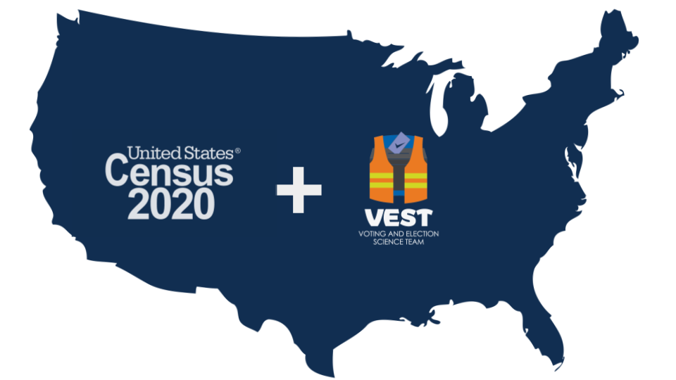

2020 Redistricting Data Files
Census and election data joined together for use in redistricting and voting rights analysis.

The ALARM Project is glad to provide precinct-level demographic and election data from the 2020 decennial census and the Voting and Election Science Team which have been tidied and joined together using 2020 precinct boundaries. Where 2020 precinct boundaries are not available, Census block-level data is provided instead, and where no VEST data is available, only demographic information is provided. Code to generate the data from these sources is included; the entire workflow is open-source and reproducible.
Getting the data
Download individual states’ data below, or download a ZIP of all the data here. Our repository also contains more detailed data, as well as code and instructions for programmatic downloading, adding shapefile geometries, and other use cases.
Please make sure to cite the Voting and Election Science Team and the U.S. Census Bureau. Consult the license for information on modifying and sharing the data and/or code.
2020 state data
Alabama
VTDs
al_2020_vtd.csv
Alaska
VTDs
ak_2020_vtd.csv
Arizona
VTDs
az_2020_vtd.csv
Arkansas
VTDs
ar_2020_vtd.csv
California
Census blocks
ca_2020_block.csv
Colorado
VTDs
co_2020_vtd.csv
Connecticut
VTDs
ct_2020_vtd.csv
Delaware
VTDs
de_2020_vtd.csv
District of Columbia
VTDs
dc_2020_vtd.csv
Florida
VTDs
fl_2020_vtd.csv
Georgia
VTDs
ga_2020_vtd.csv
Hawaii
Census blocks
hi_2020_block.csv
Idaho
VTDs
id_2020_vtd.csv
Illinois
VTDs
il_2020_vtd.csv
Indiana
VTDs
in_2020_vtd.csv
Iowa
VTDs
ia_2020_vtd.csv
Kansas
VTDs
ks_2020_vtd.csv
Kentucky
VTDs
ky_2020_vtd.csv
Louisiana
VTDs
la_2020_vtd.csv
Maine
VTDs
me_2020_vtd.csv
Maryland
VTDs
md_2020_vtd.csv
Massachusetts
VTDs
ma_2020_vtd.csv
Michigan
VTDs
mi_2020_vtd.csv
Minnesota
VTDs
mn_2020_vtd.csv
Mississippi
VTDs
ms_2020_vtd.csv
Missouri
VTDs
mo_2020_vtd.csv
Montana
VTDs
mt_2020_vtd.csv
Nebraska
VTDs
ne_2020_vtd.csv
Nevada
VTDs
nv_2020_vtd.csv
New Hampshire
VTDs
nh_2020_vtd.csv
New Jersey
VTDs
nj_2020_vtd.csv
New Mexico
VTDs
nm_2020_vtd.csv
New York
VTDs
ny_2020_vtd.csv
North Carolina
VTDs
nc_2020_vtd.csv
North Dakota
VTDs
nd_2020_vtd.csv
Ohio
VTDs
oh_2020_vtd.csv
Oklahoma
VTDs
ok_2020_vtd.csv
Oregon
Census blocks
or_2020_block.csv
Pennsylvania
VTDs
pa_2020_vtd.csv
Rhode Island
VTDs
ri_2020_vtd.csv
South Carolina
VTDs
sc_2020_vtd.csv
South Dakota
VTDs
sd_2020_vtd.csv
Tennessee
VTDs
tn_2020_vtd.csv
Texas
VTDs
tx_2020_vtd.csv
Utah
VTDs
ut_2020_vtd.csv
Vermont
VTDs
vt_2020_vtd.csv
Virginia
VTDs
va_2020_vtd.csv
Washington
VTDs
wa_2020_vtd.csv
West Virginia
VTDs
wv_2020_vtd.csv
Wisconsin
VTDs
wi_2020_vtd.csv
Wyoming
VTDs
wy_2020_vtd.csv
Using the data
Data Format
Each data table contains several identification columns, a set of census-derived demographic columns, and a set of VEST-derived election columns.
GEOID20is the unique identifier for a precinct or Census block. Thestateandcountyof the precinct or block are also provided.Census variables are prefixed with
pop_orvap_, depending on whether they are for the entire population or the voting-age population. Suffixes refer to racial and ethnic categories, as follows:_hisp: Hispanic or Latino (of any race)_white: White alone, not Hispanic or Latino_black: Black or African American alone, not Hispanic or Latino_aian: American Indian and Alaska Native alone, not Hispanic or Latino_asian: Asian alone, not Hispanic or Latino_nhpi: Native Hawaiian and Other Pacific Islander alone, not Hispanic or Latino_other: Some Other Race alone, not Hispanic or Latino_two: Population of two or more races, not Hispanic or Latino
Election variables consist of average vote counts for Democratic and Republican candidates. The
adv_##andarv_##columns report the average vote count in the##election, across all statewide races contested by both parties. Thendvandnrvcolumns further average the vote counts across all available election years. For specific statewide races, you may download the files invest-2020/and join them to the data using theGEOID20column.
More Tools
- For redistricting and voting rights analysis, we recommend the
redistpackage. - For pre-processing and tidying data for redistricting analysis, we recommend the
geomanderpackage. - For more custom tabulations of the 2020 census data, we recommend the
PL94171package. - For general-purpose census data processing, we recommend the
censablepackage. - For alternate data unaffected by Census differential privacy, you may want to consider FCC block-level estimates, available using the
blockpoppackage.
Technical notes
To produce election data using 2020 precinct boundaries, election results were projected down to the 2010 block level using voting-age population as weights. Results for 2020 blocks were then estimated using 2010 blocks and the land-use-based crosswalk files from VEST. Finally, 2020 blocks were aggregated to 2020 precincts using the Census’ 2020 block assignment files.
2010 Data Addendum
If you are looking for a similar construction for 2010 data, please see here.
Citation
BibTeX citation:
@online{t._kenny2021,
author = {T. Kenny, Christopher and McCartan, Cory},
title = {2020 {Redistricting} {Data} {Files}},
date = {2021-08-10},
url = {https://alarm-redist.github.io/posts/2021-08-10-census-2020/},
langid = {en}
}
For attribution, please cite this work as:
T. Kenny, Christopher, and Cory McCartan. 2021. “2020
Redistricting Data Files.†August 10, 2021. https://alarm-redist.github.io/posts/2021-08-10-census-2020/.